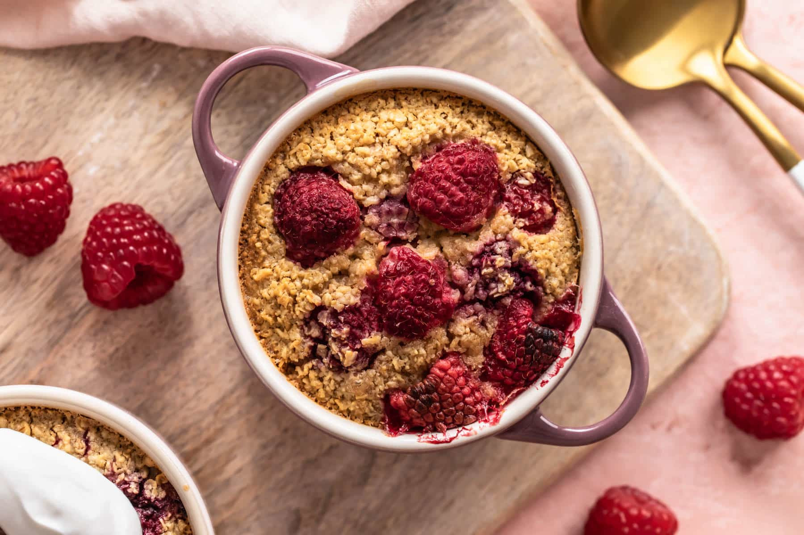

Return to recipes homepage.
Baked Oats

Here is a recipe for my tasty vegan baked oats!
They can be cooked in the airfryer and go very well with yoghurt. Why not
try adding a different fruit or even chcocolate chips?
Ingredients
- 1 cup oats
- 1 scoop vegan protein
- 1/2 tsp baking powder
- 1 tbsp maple syrup
- 1 tbsp ground flaxseed + 3 tbsp water
- 3/4 cup soya milk
- 1 tbsp almond butter (optional)
- Handful of frozen raspberries
Instructions
- Combine flaxseed and water to make flax egg. Set aside.
-
Blend all ingredients, except raspberries until relatively smooth.
- Pour into silicon dish and sprinkle the raspberries on top.
- Bake for 18 minutes in the airdryer at 175 °C.